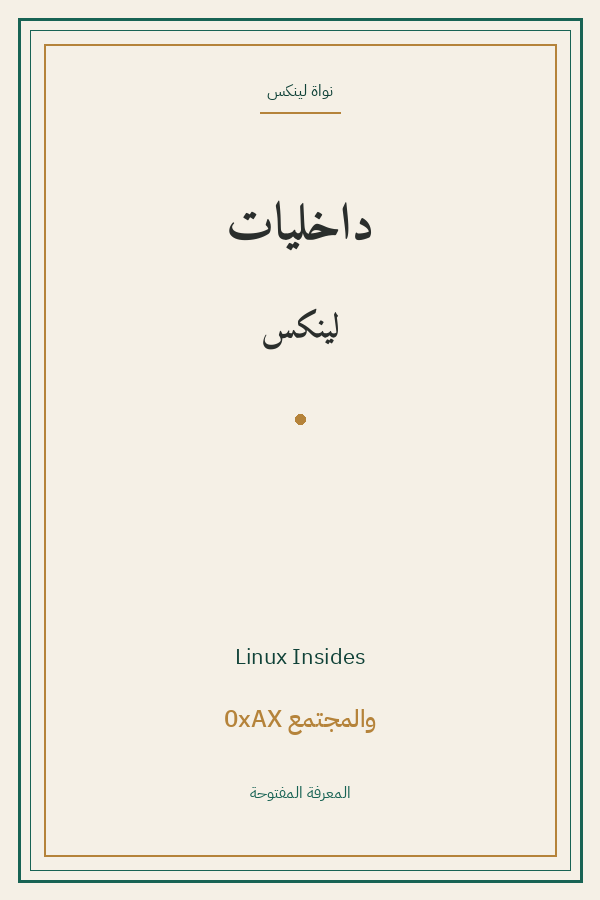

Linux Insides
داخليات لينكس: من الإقلاع إلى النواة
البرمجة والتقنية
Apache-2.0
ترجمة كاملة
داخليات لينكس: من الإقلاع إلى النواة — تحليل عميق لكيفية إقلاع لينكس x86_64: الإعداد والذاكرة المبكرة والوصف والانقطاعات والاستدعاءات والجدولة والمؤقتات والذاكرة الرئيسية والسيمافورات — من كود المصدر مباشرة.
| المؤلف | أوكس إكس (0xAX) — والمجتمع — 0xAX |
| سنة النص الأصلي | ٢٠٢٤ |
| كلمات المصدر (الإنجليزية) | ٢٠٦٤٨٩ |
| كلمات الترجمة (العربية) | ١٦٩٨٥٨ |
| مقاطع الترجمة المدققة | ١٢٢ |
| مدة القراءة التقريبية | ≈ ٣٨٦٠ دقيقة |
الترخيص والحقوق: رخصة أباتشي 2.0 مفتوحة المصدر (github.com/0xAX/linux-insides).